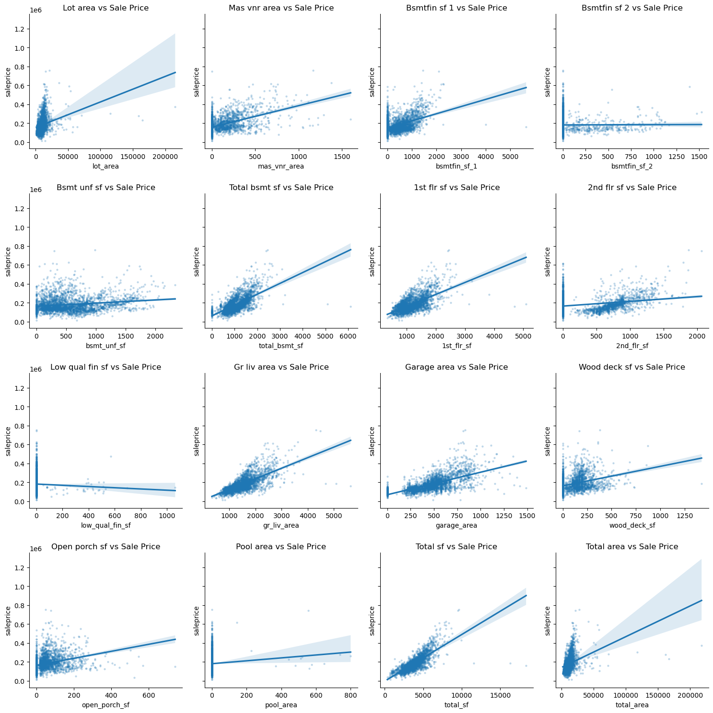
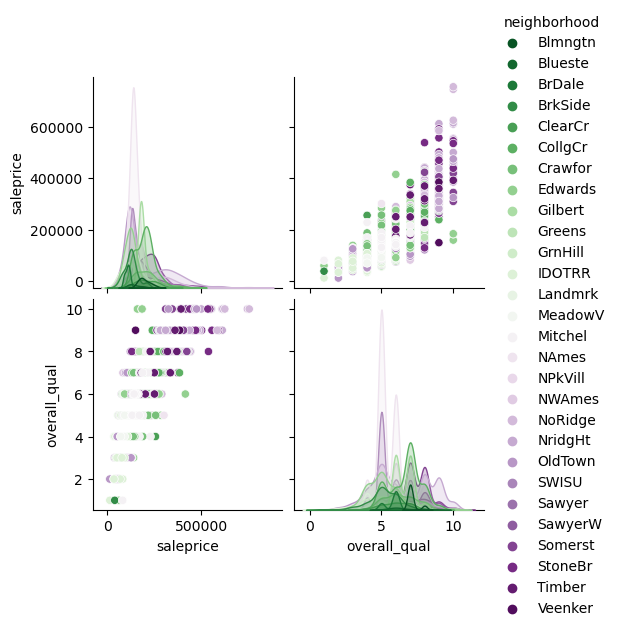
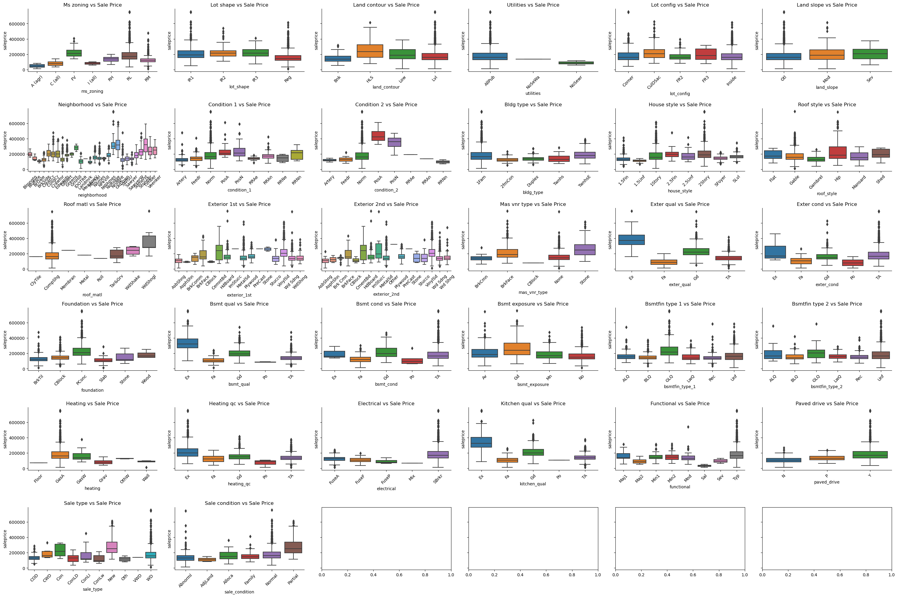
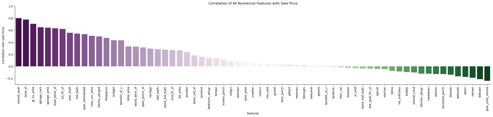

Code
import matplotlib.pyplot as plt
import numpy as np
import pandas as pd
import re
import seaborn as sns
import seaborn.objects as so
from src.utils import DataProcessing as dp
# TODO finish transfering functions to DataProcessing.pyimport matplotlib.pyplot as plt
import numpy as np
import pandas as pd
import re
import seaborn as sns
import seaborn.objects as so
from src.utils import DataProcessing as dp
# TODO finish transfering functions to DataProcessing.py
PATH= r"/Users/michaelschaid/GitHub/house_prediction/data/AmesHousing.tsv"
data = pd.read_csv(PATH, delimiter='\t')
def clean_data(df):
def null_counts(df: pd.DataFrame, upper_lim: float, lower_lim=0) -> tuple:
"""Calculate the percentage of missing values in each column and return:
a list of column names that should be imputed.
a list of column names that should be dropped.
"""
# calculate missing values percentage and return
null_counts = pd.DataFrame(
df.isnull().sum()/df.shape[0], columns=['null_counts'])
cols_impute = null_counts.query(
"null_counts > @lower_lim & null_counts < @upper_lim").index.to_list()
cols_drop = null_counts.query(
"null_counts >= @upper_lim").index.to_list()
return cols_impute, cols_drop
# null_cols = null_counts(df, 0.05)
def to_category(df_) -> list:
return df_.astype({c: 'category' for c in df_.select_dtypes('object').columns})
def group_col_names(df, term):
return [col for col in df.columns if re.search(term, col)]
return (df
# drop columns with more than 5% missing values
.drop(columns=null_counts(df, 0.05)[1])
# drop identifier columns that are not useful for modeling
.drop(columns=['PID', 'Order'])
# impute numerical columns and fill with mean value
.fillna(value={c: df[c].mean() for c in df.select_dtypes('number').columns})
# rename columns to lowercase and replace spaces with underscores
.rename(lambda col: col.replace(' ', '_').lower(), axis=1)
# convert object columns to category
.pipe(lambda df_: to_category(df_))
.assign(year_until_remod=lambda df_: df_['year_remod/add'] - df_['year_built'], # years between remod and built
total_sf=lambda df_: df_[group_col_names(df_, 'sf')].sum(
axis=1), # total square footage
total_area=lambda df_: df_[group_col_names(
df_, 'area')].sum(axis=1), # total area
)
)
homes =clean_data(data)
homes| ms_subclass | ms_zoning | lot_area | street | lot_shape | land_contour | utilities | lot_config | land_slope | neighborhood | ... | pool_area | misc_val | mo_sold | yr_sold | sale_type | sale_condition | saleprice | year_until_remod | total_sf | total_area | |
|---|---|---|---|---|---|---|---|---|---|---|---|---|---|---|---|---|---|---|---|---|---|
| 0 | 20 | RL | 31770 | Pave | IR1 | Lvl | AllPub | Corner | Gtl | NAmes | ... | 0 | 0 | 5 | 2010 | WD | Normal | 215000 | 0 | 4088.0 | 34066.0 |
| 1 | 20 | RH | 11622 | Pave | Reg | Lvl | AllPub | Inside | Gtl | NAmes | ... | 0 | 0 | 6 | 2010 | WD | Normal | 105000 | 0 | 2800.0 | 13248.0 |
| 2 | 20 | RL | 14267 | Pave | IR1 | Lvl | AllPub | Corner | Gtl | NAmes | ... | 0 | 12500 | 6 | 2010 | WD | Normal | 172000 | 0 | 4416.0 | 16016.0 |
| 3 | 20 | RL | 11160 | Pave | Reg | Lvl | AllPub | Corner | Gtl | NAmes | ... | 0 | 0 | 4 | 2010 | WD | Normal | 244000 | 0 | 6330.0 | 13792.0 |
| 4 | 60 | RL | 13830 | Pave | IR1 | Lvl | AllPub | Inside | Gtl | Gilbert | ... | 0 | 0 | 3 | 2010 | WD | Normal | 189900 | 1 | 3731.0 | 15941.0 |
| ... | ... | ... | ... | ... | ... | ... | ... | ... | ... | ... | ... | ... | ... | ... | ... | ... | ... | ... | ... | ... | ... |
| 2925 | 80 | RL | 7937 | Pave | IR1 | Lvl | AllPub | CulDSac | Gtl | Mitchel | ... | 0 | 0 | 3 | 2006 | WD | Normal | 142500 | 0 | 3129.0 | 9528.0 |
| 2926 | 20 | RL | 8885 | Pave | IR1 | Low | AllPub | Inside | Mod | Mitchel | ... | 0 | 0 | 6 | 2006 | WD | Normal | 131000 | 0 | 2794.0 | 10271.0 |
| 2927 | 85 | RL | 10441 | Pave | Reg | Lvl | AllPub | Inside | Gtl | Mitchel | ... | 0 | 700 | 7 | 2006 | WD | Normal | 132000 | 0 | 2906.0 | 11411.0 |
| 2928 | 20 | RL | 10010 | Pave | Reg | Lvl | AllPub | Inside | Mod | Mitchel | ... | 0 | 0 | 4 | 2006 | WD | Normal | 170000 | 1 | 4445.0 | 11817.0 |
| 2929 | 60 | RL | 9627 | Pave | Reg | Lvl | AllPub | Inside | Mod | Mitchel | ... | 0 | 0 | 11 | 2006 | WD | Normal | 188000 | 1 | 4230.0 | 12371.0 |
2930 rows × 72 columns
sqr_footage = [col for col in homes.columns if re.search(r'sf|area', col)] +['saleprice']
def make_reg_panel(cols):
number_subplots = len(cols)-1
grid_sqr= int(np.ceil(np.sqrt(number_subplots)))
fig, ax = plt.subplots(figsize=(15,15), ncols=grid_sqr, nrows=grid_sqr, sharey=True)
for col, ax in zip(cols, ax.flatten()):
if col !='saleprice':
kws_={"s": 5,'alpha': 0.2}
sns.regplot(x=col, y='saleprice', data=homes, ax=ax, scatter_kws=kws_)
ax.set_title(f'{col.replace("_", " ").capitalize()} vs Sale Price')
sns.despine(ax=ax)
plt.tight_layout()
plt.show()
make_reg_panel(sqr_footage)
sns.pairplot(data=homes[['saleprice', 'overall_qual', 'neighborhood']], hue='neighborhood', palette='PRGn_r')<seaborn.axisgrid.PairGrid at 0x189f406d0>
Very few Categorical features have signifincat correlation with sale price and will likely be dropped although neighborhood has many categories, there is some degree of correlation with saleprice which makes sence
def plot_categorical(cat_threshold = 2):
homes_cat = homes[homes.select_dtypes('category').columns.tolist() + ['saleprice']]
homes_cat_gt5 = homes_cat[homes_cat.nunique()[homes_cat.nunique() > cat_threshold].index.to_list()].columns.to_list()
panel_numb = len(homes_cat_gt5)-1
grid_numb = int(np.ceil(np.sqrt(panel_numb)))
fig, ax = plt.subplots(ncols=grid_numb, nrows=grid_numb, figsize=(30,20), sharey=True)
for col, ax in zip(homes_cat_gt5, ax.flatten()):
if col !='saleprice':
sns.boxplot(x=col, y='saleprice', data=homes_cat, ax=ax)
ax.set_title(f'{col.replace("_", " ").capitalize()} vs Sale Price')
sns.despine(ax=ax)
ax.tick_params(axis='x', rotation=45)
plt.tight_layout()
plt.show()
plot_categorical()
def get_dummies(df, cols):
cat_to_drop = df.select_dtypes('category').columns.tolist()
cols_dummies = (pd.get_dummies(df[cols])
.rename(lambda c: c.lower(), axis=1)
)
return (pd.concat([df, cols_dummies], axis=1)
.drop(columns=cat_to_drop)
)
get_dummies(homes, cols='neighborhood')| ms_subclass | lot_area | overall_qual | overall_cond | year_built | year_remod/add | mas_vnr_area | bsmtfin_sf_1 | bsmtfin_sf_2 | bsmt_unf_sf | ... | noridge | nridght | oldtown | swisu | sawyer | sawyerw | somerst | stonebr | timber | veenker | |
|---|---|---|---|---|---|---|---|---|---|---|---|---|---|---|---|---|---|---|---|---|---|
| 0 | 20 | 31770 | 6 | 5 | 1960 | 1960 | 112.0 | 639.0 | 0.0 | 441.0 | ... | 0 | 0 | 0 | 0 | 0 | 0 | 0 | 0 | 0 | 0 |
| 1 | 20 | 11622 | 5 | 6 | 1961 | 1961 | 0.0 | 468.0 | 144.0 | 270.0 | ... | 0 | 0 | 0 | 0 | 0 | 0 | 0 | 0 | 0 | 0 |
| 2 | 20 | 14267 | 6 | 6 | 1958 | 1958 | 108.0 | 923.0 | 0.0 | 406.0 | ... | 0 | 0 | 0 | 0 | 0 | 0 | 0 | 0 | 0 | 0 |
| 3 | 20 | 11160 | 7 | 5 | 1968 | 1968 | 0.0 | 1065.0 | 0.0 | 1045.0 | ... | 0 | 0 | 0 | 0 | 0 | 0 | 0 | 0 | 0 | 0 |
| 4 | 60 | 13830 | 5 | 5 | 1997 | 1998 | 0.0 | 791.0 | 0.0 | 137.0 | ... | 0 | 0 | 0 | 0 | 0 | 0 | 0 | 0 | 0 | 0 |
| ... | ... | ... | ... | ... | ... | ... | ... | ... | ... | ... | ... | ... | ... | ... | ... | ... | ... | ... | ... | ... | ... |
| 2925 | 80 | 7937 | 6 | 6 | 1984 | 1984 | 0.0 | 819.0 | 0.0 | 184.0 | ... | 0 | 0 | 0 | 0 | 0 | 0 | 0 | 0 | 0 | 0 |
| 2926 | 20 | 8885 | 5 | 5 | 1983 | 1983 | 0.0 | 301.0 | 324.0 | 239.0 | ... | 0 | 0 | 0 | 0 | 0 | 0 | 0 | 0 | 0 | 0 |
| 2927 | 85 | 10441 | 5 | 5 | 1992 | 1992 | 0.0 | 337.0 | 0.0 | 575.0 | ... | 0 | 0 | 0 | 0 | 0 | 0 | 0 | 0 | 0 | 0 |
| 2928 | 20 | 10010 | 5 | 5 | 1974 | 1975 | 0.0 | 1071.0 | 123.0 | 195.0 | ... | 0 | 0 | 0 | 0 | 0 | 0 | 0 | 0 | 0 | 0 |
| 2929 | 60 | 9627 | 7 | 5 | 1993 | 1994 | 94.0 | 758.0 | 0.0 | 238.0 | ... | 0 | 0 | 0 | 0 | 0 | 0 | 0 | 0 | 0 | 0 |
2930 rows × 66 columns
fig, ax = plt.subplots(figsize=(30, 5))
format = {
'xlabel':'Features',
'ylabel':'Correlation with Sale Price',
'title':'Correlation of All Numerical Features with Sale Price',
"ylim": (-0.3, 1)
}
sns.barplot(data=processed_corr.iloc[1:], x=list(processed_corr.iloc[1:].index), y='saleprice', palette='PRGn', ax=ax)
ax.set(**format)
plt.xticks(rotation=90)
# drawlines(*(0.3, -0.1))
sns.despine()
ax.annotate('lines indicate threshold criteria for feature selection', xy=(150, 1), xytext=(70, 0.5))
plt.show()
features = dp.select_features(processed_homes, lower_threshold = -0.1, upper_threshold= 0.3)
features['overall_qual',
'total_sf',
'gr_liv_area',
'garage_cars',
'garage_area',
'total_bsmt_sf',
'1st_flr_sf',
'year_built',
'full_bath',
'year_remod/add',
'mas_vnr_area',
'totrms_abvgrd',
'fireplaces',
'nridght',
'bsmtfin_sf_1',
'total_area',
'wood_deck_sf',
'open_porch_sf',
'overall_cond',
'kitchen_abvgr',
'meadowv',
'sawyer',
'enclosed_porch',
'brkside',
'edwards',
'idotrr',
'names',
'oldtown',
'year_until_remod']In this notebook we did the following:
graph TD
A[read data]-->
B[clean data and extract features]-->
C[calculate and filter high correlations]-->
D[return processed features]
all processing functionality has been impleted the DataProcessing class in DataProcessing.py
# tweak_df
# get_dummies
# select_features
# data to train
# df[select_features]